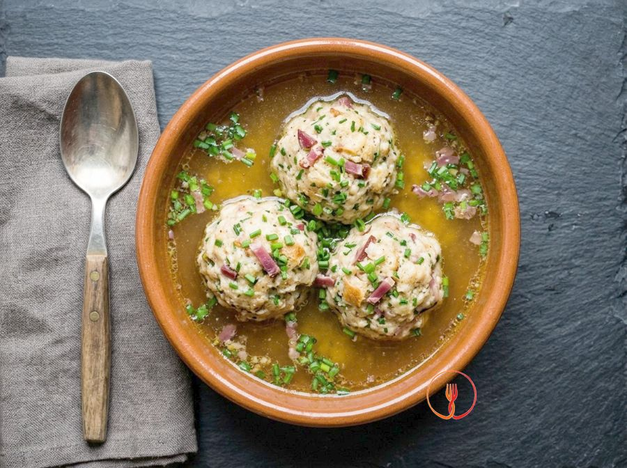

Bread dumplings in broth (Canederli)
Stale bread dumplings with speck and chives served in broth.
A specialty of Trentino-South Tyrol, canederli are large bread dumplings featuring the smoky flavor of speck. Served in hot meat broth, they offer a soft texture and comforting warmth perfect for winter.
Ingredients
- Stale bread250 g
- Speck100 g
- Whole milk200 ml
- Eggs100 g
- Plain flour40 g
- Chives5 g
- Meat stock1200 ml
- Fine salt2 g
Allergens
Gluten, Milk, Eggs
May contain traces of: Celery, Mustard, Soy.
Method
- Start by cutting 250 g of stale bread into small, regular cubes of about one centimeter, placing them in a large bowl. Pour 200 ml of whole milk at room temperature over them and mix gently with your hands; let it rest for 15 minutes so the bread absorbs the liquid evenly without completely falling apart.
- While the bread is resting, prepare the aromatics by cutting 100 g of speck into very fine cubes and chopping 5 g of fresh chives with a knife. These ingredients must be very small to distribute evenly throughout the dough and release all their smoky and herbal fragrance.
- Add the chopped speck, chives, and 2 g of fine salt to the softened bread, then add 100 g of previously beaten eggs. Begin working the mixture with slow movements, ensuring the egg binds all the elements together; you will feel the consistency become more compact and fragrant.
- Sift 40 g of 00 flour over the mixture and incorporate it quickly without overworking the mass. The flour acts as an essential binder: the dough should be slightly sticky but able to pull away from the sides of the bowl, ensuring the dumplings don't fall apart during cooking.
- Let the resulting dough rest for about 5-10 minutes at room temperature. This short step allows the flour to hydrate and the structure of the dumpling to stabilize, making the shaping much easier and the final result more elastic.
- Lightly moisten your hands with water and divide the dough into 8 equal portions, rolling them between your palms to form smooth, compact spheres. Make sure there are no cracks on the surface; a perfect spherical shape ensures even cooking and an elegant presentation on the plate.
- Pour 1200 ml of meat broth into a large pot and bring it to a gentle boil over medium heat. It is essential that the boil is gentle and not violent, as overly strong bubbles could break the delicate structure of the bread during the first few minutes of immersion.
- Gently lower the 8 dumplings into the boiling broth and let them cook for about 15 minutes over medium-low heat. You will see that they initially go to the bottom and then slowly rise to the surface; when they are swollen and tender to the touch, it means the heat has penetrated to the core.
- Turn off the heat and let the dumplings rest in the broth for a minute before serving. Serve 2 dumplings per person in deep bowls, covering them with the hot, clear broth to enhance the bold flavor of the speck and the softness of the bread.
Tips
- Use bread that is two or three days old to ensure it absorbs the milk without completely falling apart.
- Lightly moisten your hands with cold water when shaping the balls to achieve a smooth and compact surface.
- Keep the broth at a gentle simmer during cooking; a violent boil could cause the dumplings to break.
Variations
- If you don't have chives, you can flavor the bread mixture with a grating of fresh nutmeg.
- Substitute the speck with cubes of flavorful cheese to serve the canederli in a light vegetable broth.
Nutrition facts (estimate)
| Per serving (450 g) | Per 100 g | |
|---|---|---|
| Energy | 1515 kJ / 362 kcal | 335 kJ / 80 kcal |
| Protein | 22 g | 4.8 g |
| Carbohydrates | 45 g | 10 g |
| of which sugars | 4.1 g | 0.9 g |
| Fat | 10 g | 2.3 g |
| of which saturates | 3.9 g | 0.9 g |
| Fibre | 2.1 g | 0.5 g |
| Salt | 5.1 g | 1.1 g |
AI estimates based on average CREA / USDA data: indicative only, not a substitute for medical or dietitian advice.
Open the recipe in the app for the shopping list, ingredient sheets and nearby shops.